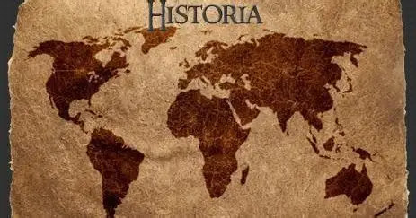
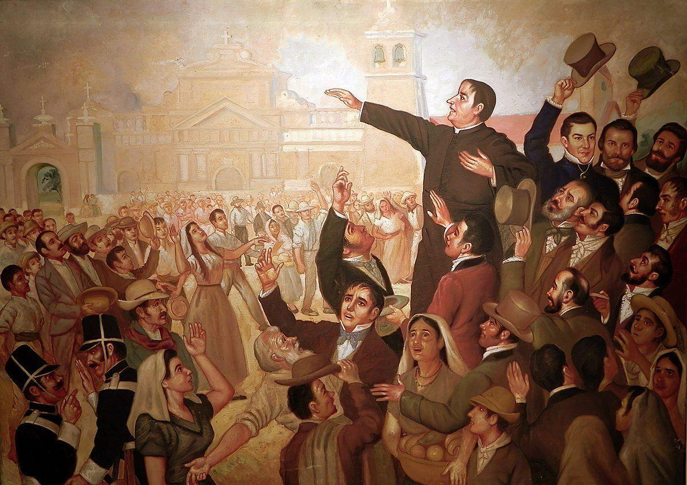
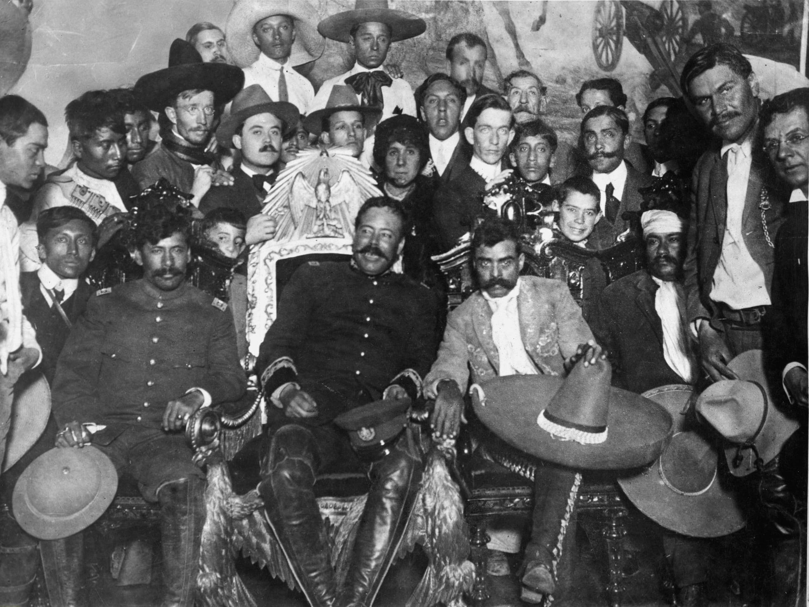
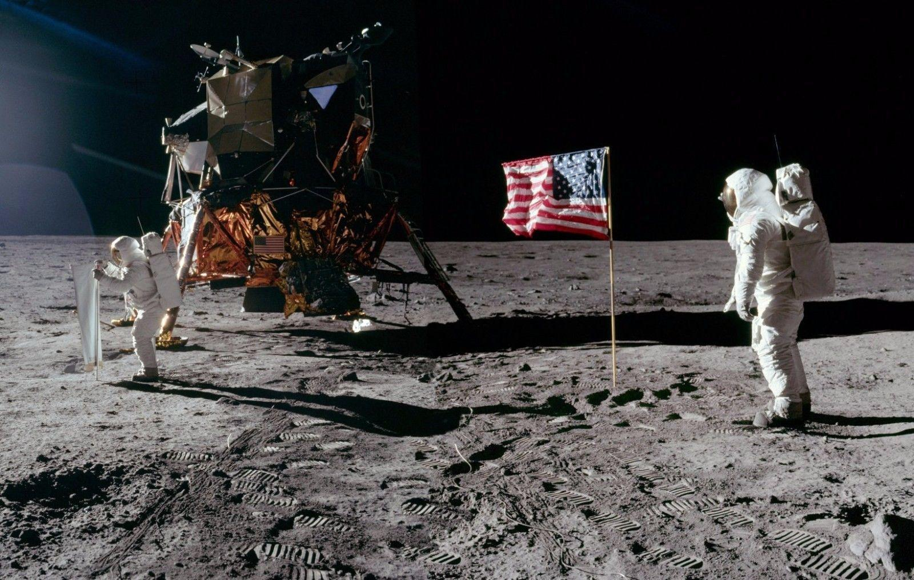
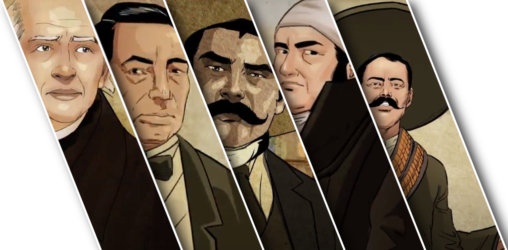
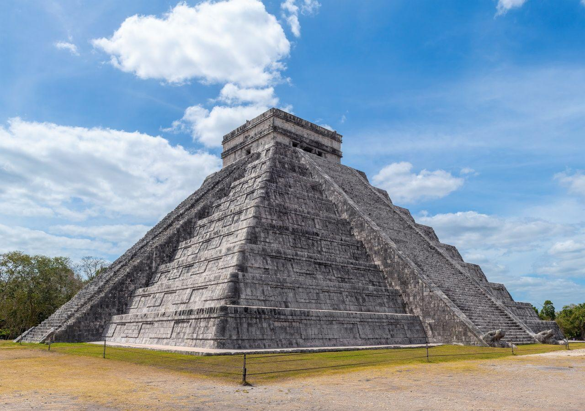
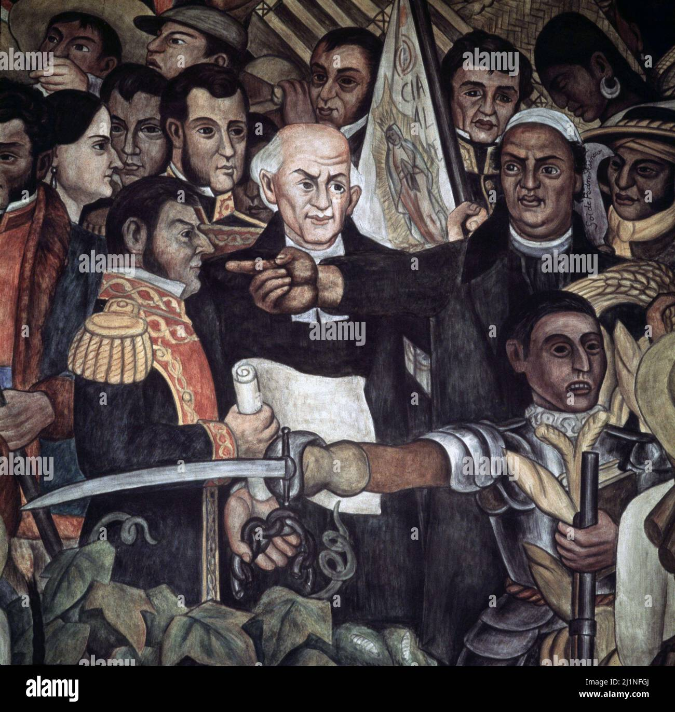
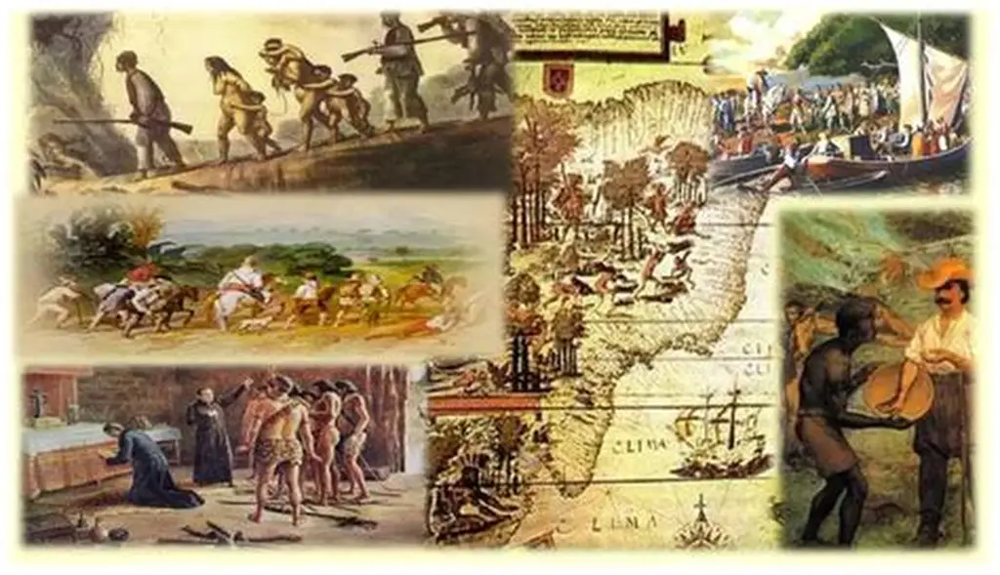
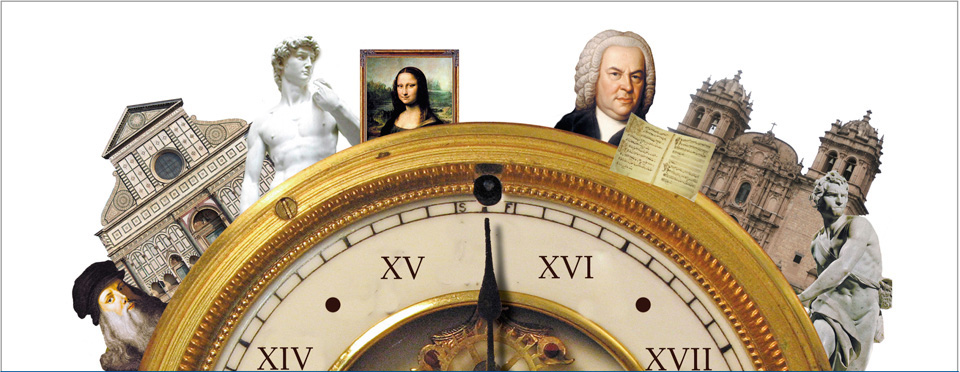
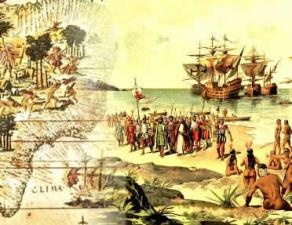

El pasado construye nuestro presente
La historia nos permite conocer los acontecimientos que han cambiado al mundo. Descubre personajes, culturas y momentos que dejaron huella en la humanidad.
Descubrir historia
¿Por qué es importante la historia?
La historia nos ayuda a comprender cómo vivían las personas en otras épocas, cuáles fueron sus costumbres y qué acontecimientos provocaron cambios en la sociedad. También nos permite aprender de los errores del pasado y valorar nuestra identidad.
📚 Conocimiento
Aprendemos sobre nuestro origen y las civilizaciones.
🌎 Cultura
Conocemos las tradiciones y formas de vida.
⏳ Aprendizaje
Comprendemos los cambios que han ocurrido con el tiempo.
Acontecimientos históricos importantes

Independencia de México (1810-1821)
Fue un proceso histórico que permitió a México separarse del dominio español. Comenzó el 16 de septiembre de 1810 y terminó en 1821.

Revolución Mexicana (1910)
Fue un movimiento armado que buscó importantes cambios políticos y sociales en México.

Llegada del ser humano a la Luna (1969)
La misión Apollo 11 consiguió que los primeros seres humanos caminaran sobre la superficie lunar.
Caída del Muro de Berlín (1989)
Este acontecimiento representó un cambio importante para Alemania y para la historia de Europa.
Personajes históricos

| Personaje | Época | Aportación |
|---|---|---|
| Miguel Hidalgo | Independencia de México | Inició el movimiento de Independencia en 1810. |
| Benito Juárez | Siglo XIX | Promovió las Leyes de Reforma. |
| Francisco I. Madero | Revolución Mexicana | Defendió la democracia en México. |
Línea del tiempo
- 1810: Inicio de la Independencia de México.
- 1821: Consumación de la Independencia.
- 1910: Inicio de la Revolución Mexicana.
- 1969: Llegada del ser humano a la Luna.
- 1989: Caída del Muro de Berlín.
Temas históricos
- Civilizaciones antiguas.
- Segunda Guerra Mundial.
- Revolución Industrial.
- Cultura maya.
- Historia de Roma.
Etapas de la Independencia
- Inicio del movimiento en 1810.
- Organización de los insurgentes.
- Resistencia del movimiento.
- Consumación de la Independencia en 1821.
Conceptos históricos
- Historia
- Estudia los acontecimientos del pasado de la humanidad.
- Civilización
- Sociedad que comparte cultura, organización y costumbres.
- Revolución
- Transformación importante en la organización de una sociedad.
- Independencia
- Proceso mediante el cual un territorio consigue su autonomía.
Épocas históricas
- Edad Antigua
- Egipto.
- Grecia.
- Roma.
- Edad Media
- Feudalismo.
- Castillos medievales.
- Edad Moderna
- Renacimiento.
- Revolución científica.
- Edad Contemporánea
- Revolución Industrial.
- Avances tecnológicos.
Clasificación de acontecimientos
- Acontecimientos políticos.
- Acontecimientos sociales.
- Acontecimientos culturales.
- Acontecimientos científicos.
Presenta las diferentes etapas de la historia.
- Edad Antigua.
- Edad Media.
- Edad Moderna.
- Edad Contemporánea.
Galería histórica
Algunas imágenes que representan diferentes épocas de la historia.





Conoce más sobre la historia
Observa el siguiente material audiovisual.
Audio histórico
Escucha el siguiente material de apoyo.
Más temas para conocer
- Las civilizaciones antiguas.
- La Segunda Guerra Mundial.
- La Revolución Industrial.
- La cultura maya.
- La historia de Roma.
Consulta más información en estas páginas:
Instituto Nacional de Antropología e HistoriaEnciclopedia Britannica
¡La historia también es parte de nuestro futuro!
Comparte lo que aprendiste respondiendo nuestro formulario.
Contestar formulario